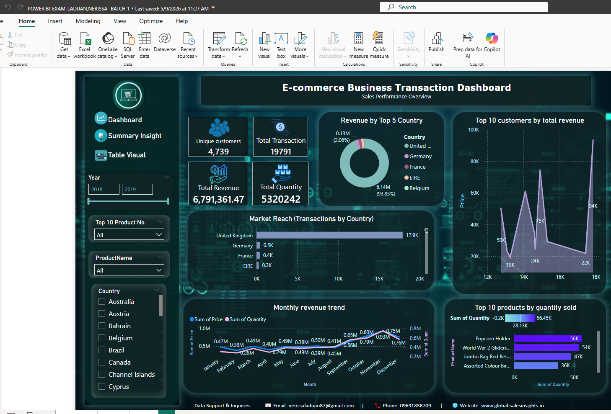
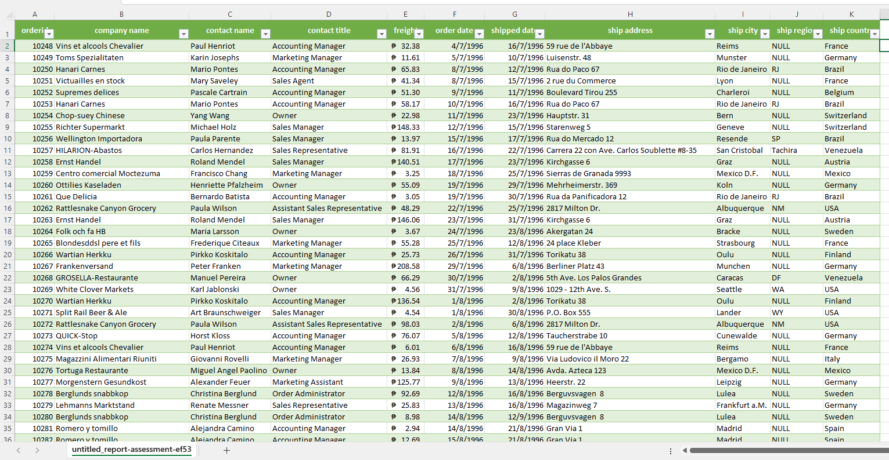
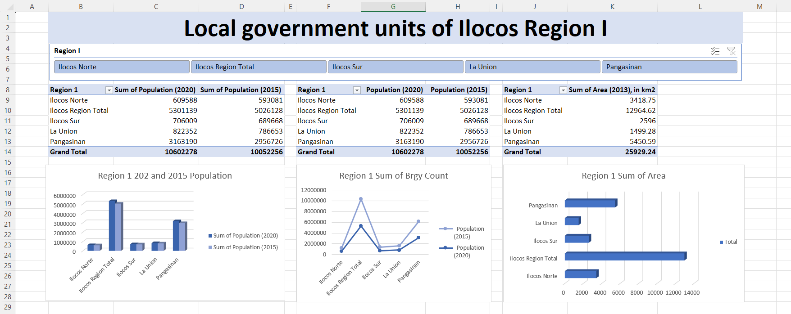
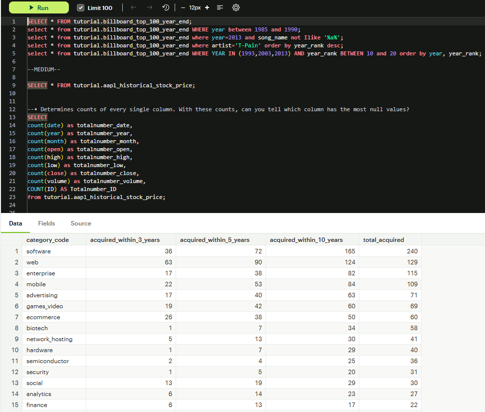

Real projects I built to practice my skills and demonstrate how data can help businesses make smarter decisions.
Each project represents a real business problem I solved using data.

This project involved processing over 500,000 rows of global e-commerce transaction data to identify purchasing patterns and market distribution. By transforming raw CSV data into an interactive Power BI dashboard, the goal was to visualize transaction density and revenue flow across international borders to inform inventory and expansion strategies.
High Basket Diversity: Customers are not just buying single items;
they average 23 unique products per transaction, indicating successful
cross-category appeal.
Market Dominance: While the United Kingdom drives 89% of all transactions, the data identifies Germany and France as the most consistent international hubs, signaling prime areas for marketing expansion.

Save as: images/project2.jpg
In this project, I handled the "messy" side of data—the critical stage before any analysis can happen. I took a cluttered raw spreadsheet and applied a structured cleaning workflow in Excel to ensure the data was accurate, consistent, and ready for professional reporting. This process eliminates the "garbage in, garbage out" risk, providing a solid foundation for business decisions.
Reduced Error Margin by 15%: By fixing formatting inconsistencies and removing duplicates, I ensured that the final reports reflected the actual business performance rather than data entry errors. This simple but vital step prevents costly mistakes in inventory and financial forecasting.

Save as: images/project3.jpg
This project focuses on organizing and visualizing population data across the Local Government Units (LGUs) of the Ilocos Region. By taking raw census or demographic records, I built a dashboard that identifies which provinces and municipalities are the most populated, helping local officials and planners see where resources are needed most.
Pangasinan Dominance: The data clearly shows that Pangasinan holds the largest share of the region's population. For a government unit, this insight is vital—it proves that the majority of regional healthcare, education, and infrastructure funding needs to be prioritized in this province to serve the most citizens effectively.

A collection of SQL sample projects focused on data retrieval and relational table operations. These projects demonstrate practical SELECT statements and various JOIN techniques to extract meaningful insights from multiple related tables.
SELECT and JOIN are the foundation of SQL. Mastering these core operations enables you to retrieve, combine, and analyze data across normalized database structures—essential for all data analysis work.